De Wachttorenstudie voorbereiden en op tijd leiden
Versie 4.0 · november 2026
⚠ Twee belangrijke waarschuwingen
Leid altijd met de originele publicatie. De app toont de paragrafen en vragen alleen om de tijden te berekenen. De studieleider mag zich nooit laten leiden door de inhoud die in de timer staat: gebruik om de stof aan het publiek te presenteren altijd de app JW Library of de gedrukte Wachttoren.
Gebruik tijdens de studie de presentatiemodus. Dat is de aanbevolen manier om de timer te gebruiken terwijl je leidt, omdat die afleiding voorkomt: hij toont alleen wat nodig is, met de kleuren groen, geel en rood zodat je in één oogopslag ziet hoe je ervoor staat met de tijd, en met grote knoppen die makkelijk in te drukken zijn om naar de volgende paragraaf te gaan en commentaren te tellen (hoofdstuk 9).
De Studietimer helpt de broeder die de Wachttorenstudie leidt de tijd goed te verdelen en op tijd te eindigen.
Je laadt het artikel van de week als pdf en de app:
leest het artikel en vindt de paragrafen, vragen, teksten die gelezen worden, afbeeldingen, voetnoten en herhalingsvragen;
berekent hoeveel tijd elk deel krijgt: de inleiding, elke paragraaf, de herhaling en het slot;
begeleidt je tijdens de studie met een stopwatch per paragraaf en kleuren die laten zien of je op tijd zit, in de uitloop of over tijd;
past zich zelf aan: als een paragraaf uitloopt, verdeelt hij de resterende tijd over de volgende, zodat je op tijd eindigt.
Onofficiële app. Het is een gratis, onafhankelijk project. Het is geen officiële publicatie en heeft geen band met jw.org of met de organisatie van Jehovah’s Getuigen. Het artikel wordt op je eigen apparaat geanalyseerd: het wordt niet naar een server gestuurd of daar opgeslagen.
De afbeeldingen in deze handleiding gebruiken een verzonnen voorbeeldartikel, geen echt Wachttoren-artikel.
2De app installeren
Het pictogram van de app is een oranje boek met een gekleurde meter (groen, geel en rood) op een zwarte achtergrond.
Gebruik je de app al in de browser op een Android-toestel, dan zie je op het startscherm de groene kaart ‘Gebruik je Android?’ met de knop ‘Openen in Google Play’.
iPhone en iPad
De app staat nog niet in de App Store, maar werkt net zo goed via internet:
Tik op de knop Deel (het vierkantje met een pijl omhoog).
Kies ‘Zet op beginscherm’ en tik op Voeg toe. Het pictogram verschijnt op je scherm.
Computer
Open temporizador-estudio.vercel.app in Chrome of Edge. Als je wilt, installeer je het als programma met het installatiepictogram in de adresbalk.
Updates: als er een nieuwe versie is, verschijnt er een melding met de knop Bijwerken. De app wordt nooit vanzelf bijgewerkt midden in een studie.
3Het startscherm
Dit zie je als eerste als je de app opent. De rode nummers in de afbeelding laten zien waar alles staat.
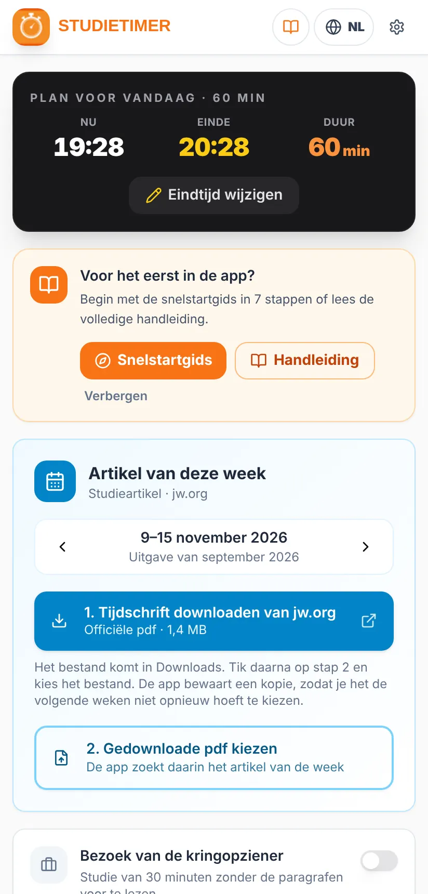
Startscherm.
Knop met het boek: opent deze handleiding wanneer je maar wilt.
‘Voor het eerst in de app?’: opent de snelstartgids of deze handleiding. Ken je de app al, tik dan op Verbergen.
‘Gebruik je Android?’ (alleen op Android-telefoons in de browser): installeer de app via Google Play. Ook deze kaart kun je verbergen.
Verder naar beneden vind je:
Planning van vandaag: de huidige tijd, hoe laat de studie eindigt en hoe lang ze duurt.
Artikel van deze week: om het tijdschrift te downloaden en te openen (onderdeel 4).
Bezoek van de kringopziener: de schakelaar voor de studie van 30 minuten (onderdeel 13).
Instellingen van de studie: een overzicht van je instellingen, met de link om te bewerken.
Helemaal onderaan de links naar privacy, de handleiding, Google Play en de geschiedenis van studies.
Bovenaan staan ook de taal (NL) en de instellingen⚙.
4Het artikel van de week laden
De kaart ‘Artikel van deze week’ toont de huidige week (bijvoorbeeld 9-15 november 2026) en het nummer van De Wachttoren waarin die staat. Met de pijlen ‹› kun je een andere week kiezen.
‘1. Tijdschrift downloaden van jw.org’ opent de officiële pdf van het juiste nummer. Op Android wordt die opgeslagen in Downloads; op de iPhone tik je op Deel → ‘Bewaar in Bestanden’.
‘2. Gedownloade pdf kiezen’: kies dat bestand. De app zoekt in het tijdschrift het artikel van de gekozen week en analyseert het. Nadat je op stap 1 hebt getikt, wordt deze knop groen als je terugkomt in de app (‘Gedownload? Tik hier om te openen’): één tik is genoeg.
De Wachttoren wordt gedownload in de taal van de app. Staat de app in het Nederlands, dan wordt de Nederlandse uitgave gedownload; staat hij in het Engels, de Engelse, en zo verder voor elke taal. Wil je een andere taal downloaden, verander dan eerst de taal van de app (hoofdstuk 14). In het Portugees wordt de uitgave voor Portugal of voor Brazilië gedownload, afhankelijk van je keuze.
De app bewaart een kopie van het tijdschrift. De volgende weken van hetzelfde nummer open je direct met ‘Artikel van deze week openen’, zonder opnieuw te downloaden. Bewaarde tijdschriften worden 3 maanden na hun laatste week automatisch verwijderd.
Op de computer kun je de pdf ook ergens op het startscherm slepen (je ziet ‘Zet de Wachttoren-pdf hier neer’) of de map kiezen waarin je de tijdschriften bewaart; de app vindt ze dan zelf.
Staat er dat het tijdschrift nog niet gepubliceerd is? jw.org publiceert elk nummer een paar weken van tevoren. Als je een week ver in de toekomst kiest, is het misschien nog niet beschikbaar.
5Het overzicht en de planning van de studie
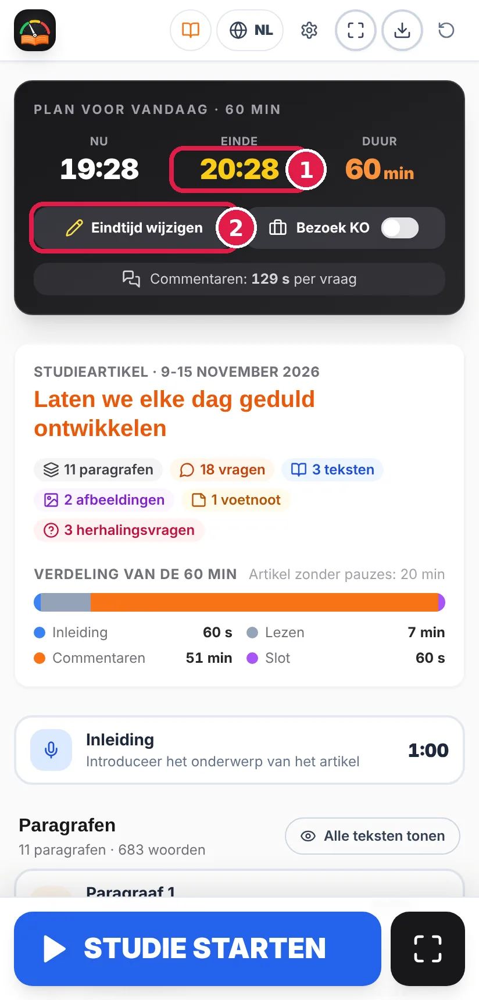
De planning van vandaag.
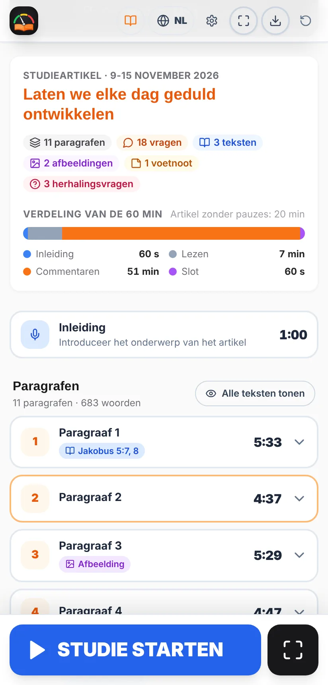
Het overzicht van het artikel.
Eindtijd: hoe laat de studie afloopt.
‘Eindtijd wijzigen’: gebruik dit als de openbare lezing uitloopt (zie het kader hieronder).
Wanneer verander ik de eindtijd? De vergadering duurt 1 uur en 45 minuten: lied en gebed (5 min), openbare lezing (30 min), lied (5 min), Wachttorenstudie (60 min) en slotlied en gebed (5 min).
Als de lezing uitloopt, gaan die minuten af van de Wachttorenstudie. Tik vóór de studie begint op ‘Eindtijd wijzigen’ en vul de tijd in waarop de studie moet eindigen zodat de vergadering op tijd klaar is (5 minuten voor het einde, voor het lied en het gebed). Alles wordt opnieuw berekend om op die tijd te eindigen.
Eindigt de lezing op tijd of eerder, verander dan niets: de studie duurt haar 60 minuten en de vergadering kan iets eerder eindigen, maar nooit later. Daarom maakt de app de studie nooit langer dan ingesteld.
Daaronder laat het overzicht van het artikel zien:
de titel en de week;
hoeveel paragrafen, vragen, teksten, afbeeldingen en voetnoten het heeft;
een gekleurde balk met de verdeling van de tijd: InleidingLezenCommentarenSlot.
De planning toont ook ‘Commentaren: X s per vraag’: de gemiddelde tijd om elke vraag te beantwoorden.
Past het artikel niet in de gekozen tijd, dan verschijnt er een waarschuwing. Je kunt de tijd verlengen of in de Instellingen sneller laten lezen.
6De lijst met paragrafen
Elke paragraaf staat op een eigen regel met zijn nummer en zijn geplande tijd. Tik op een paragraaf om hem te openen.
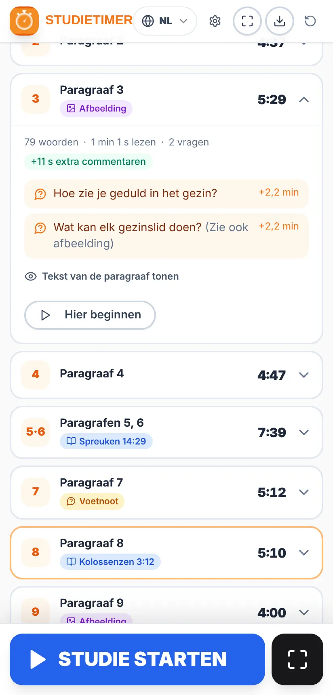
Een geopende paragraaf.
Gegevens van de paragraaf, elk met een eigen kleur: woorden (grijs), leestijd (blauw) en vragen (oranje). Tijdens de studie staat er ook het geplande tijdvak bij (paars).
Geplande tijd voor de paragraaf: het totaal en hoe het is opgebouwd. De balk toont het lezen van de paragraaf (blauw), de commentaren (oranje) en bij lange paragrafen een extra voor meer commentaren (groen). Is er een tekst om te lezen, een afbeelding of een voetnoot, dan bespreekt de toehoorders die: die staat bij de commentaren, onder de vragen (bijvoorbeeld ‘Tekst om te lezen: 35 s’). Samen geven de delen het totaal.
‘Hier beginnen’: is de studie al begonnen (bijvoorbeeld als je te laat bent), dan ga je direct naar deze paragraaf.
De gekleurde labels laten zien waar je op moet letten:
Label
Betekenis
Jakobus 5:7, 8
Er is een tekst om te lezen.
Afbeelding
De vraag gaat over een afbeelding in het artikel.
Voetnoot
Er is een voetnoot om te bespreken.
★ Kernpunt
De vraag noemt een kader of een gedachte tussen aanhalingstekens.
Met ‘Tekst van de paragraaf tonen’ kun je de tekst lezen om de tijden voor te bereiden. Gebruik voor het leiden altijd de originele publicatie.
Paragrafen met dezelfde vraag (bijvoorbeeld ‘5, 6’) horen bij elkaar, en de knop Volgende slaat de hele groep in één keer over.
7De studie stap voor stap leiden
Aanbevolen: gebruik tijdens de studie de presentatiemodus (onderdeel 9). Hier leggen we uit hoe het werkt; in beide weergaven is het hetzelfde.
Op de telefoon staan de belangrijkste knoppen altijd onderaan:
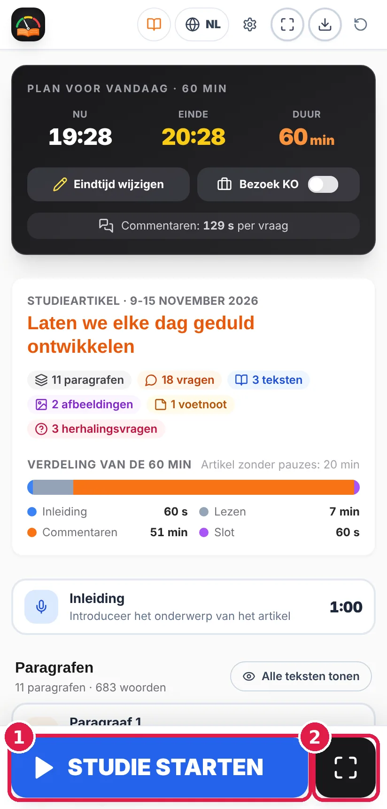
Voor het begin.
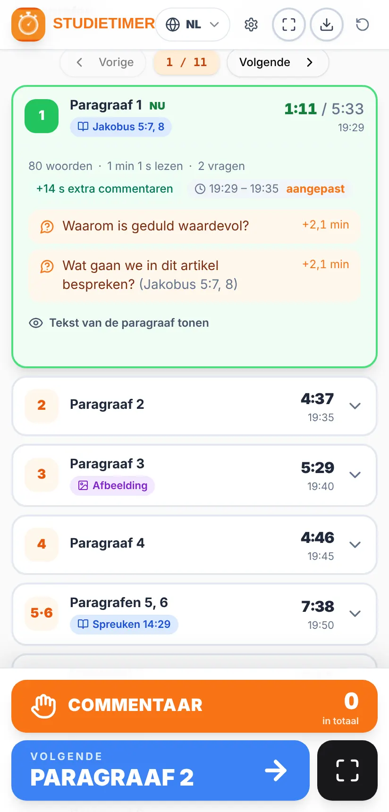
Tijdens een paragraaf.
Grote blauwe knop: laat zien wat er daarna komt. Tik erop telkens als je naar een volgend deel gaat: Studie starten → Paragraaf 1 → Paragraaf 2 → … → Herhaling → Slot → Studie afronden.
Zwarte knop⛶: opent de presentatiemodus.
Tijdens de paragrafen zie je ook de oranje knop ✋ COMMENTAAR: tik erop elke keer dat iemand commentaar geeft. Aan het eind zie je hoeveel commentaren er waren.
Inleiding. Tik op ‘Studie starten’. De totale klok en de klok van de inleiding beginnen te lopen.
Paragrafen. Tik op Volgende aan het begin van elke paragraaf. Je ziet de verstreken tijd en de geplande tijd (bijvoorbeeld 1:11 / 5:43) en de kleur (onderdeel 8).
Herhalingsvragen. Na de laatste paragraaf komen de vragen uit het kader aan het eind.
Slot. Het duurt precies zo lang als er nog over is tot de eindtijd: is er tijd over, dan gebruikt het die helemaal, ook als dat meer is dan de minuut uit de Instellingen, en is er minder, dan wordt het korter. Is de eindtijd voorbij, dan wordt het rood.
Studie afronden. De klok stopt en het rapport van de studie wordt bewaard (onderdeel 15).
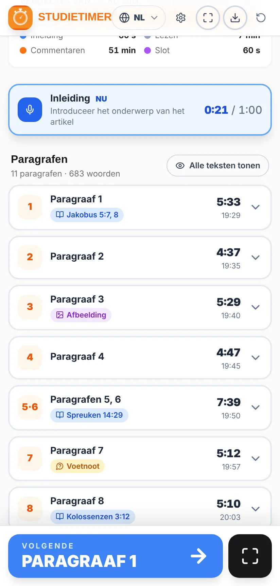
Inleiding bezig.
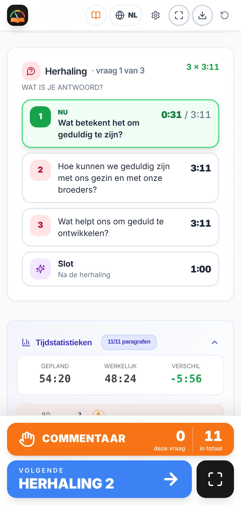
Herhalingsvragen.
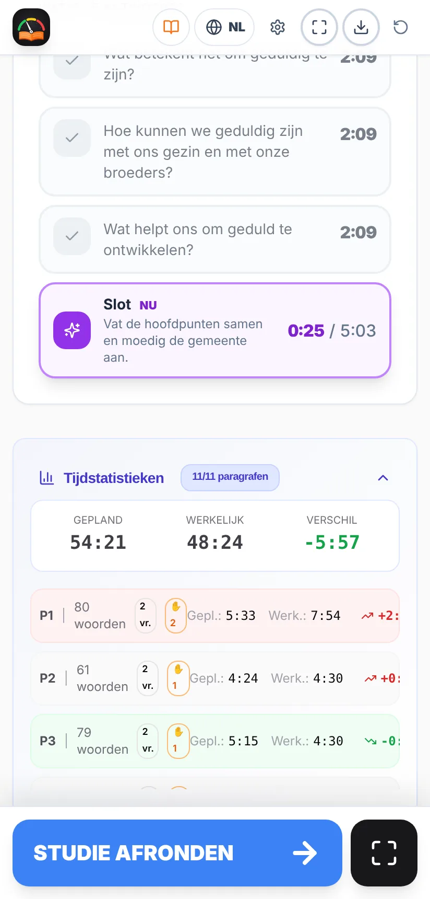
Slot.
Met de knop ⏸ in de planning kun je de klok pauzeren als er een onderbreking is. Tijdens de pauze stopt de klok van het lopende deel, maar de eindtijd verschuift niet: de resterende tijd loopt gewoon af, want de vergadering eindigt op tijd.
8De kleuren: groen, geel en rood
De kaart van het huidige deel (paragraaf, inleiding, herhalingsvraag of slot) verandert van kleur naargelang de verstreken tijd:
Kleur
Wanneer
Wat te doen
OP TIJD
Tot de geplande tijd.
Alles goed: ga zo door.
UITLOOP
De tijd is overschreden, maar met niet meer dan 30%.
Rond de commentaren af.
OVER TIJD
Meer dan 30% boven de geplande tijd.
Ga naar de volgende paragraaf.
Op tijd.
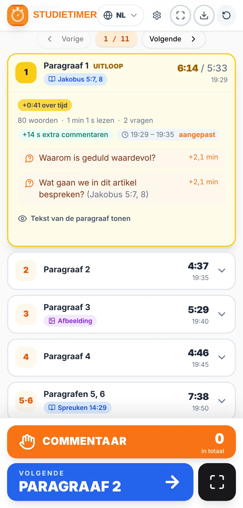
Uitloop, met de overschreden tijd.
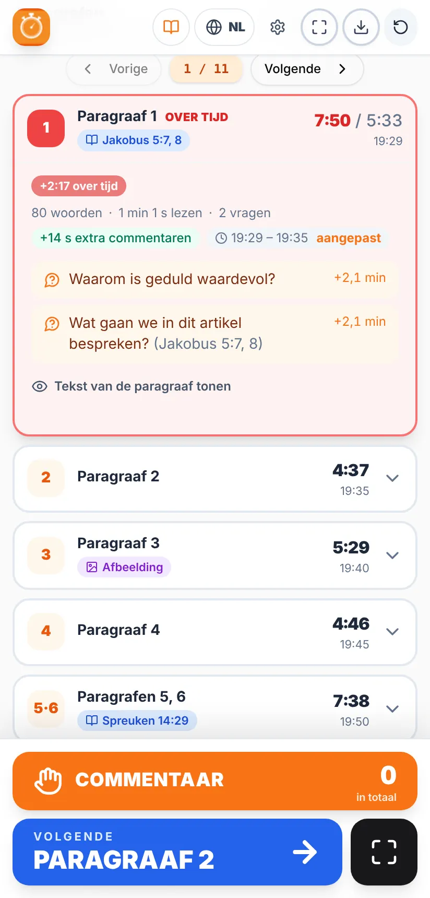
Over tijd.
In de laatste 5 minuten van de studie hebben paragrafen en herhalingsvragen geen uitloop: ze gaan direct van groen naar rood, zodat de tijd voor het einde niet opgaat. Het slot houdt altijd zijn uitloop.
Loopt een deel uit, geen probleem: als je op Volgende tikt, verdeelt de app de resterende tijd opnieuw over wat er nog komt, zodat je op tijd eindigt.
Ook de knop ‘Volgende’ waarschuwt je
Als het lopende deel rood wordt, verandert ook de grote knop om verder te gaan, zodat je het meteen ziet:
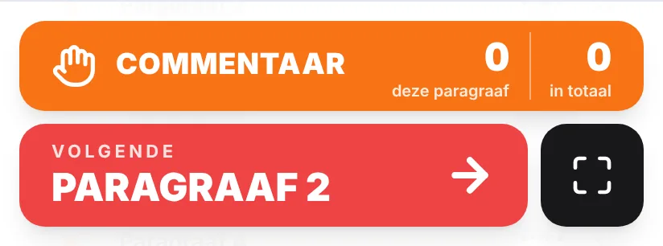
Rood: de tijd is nog in te halen.
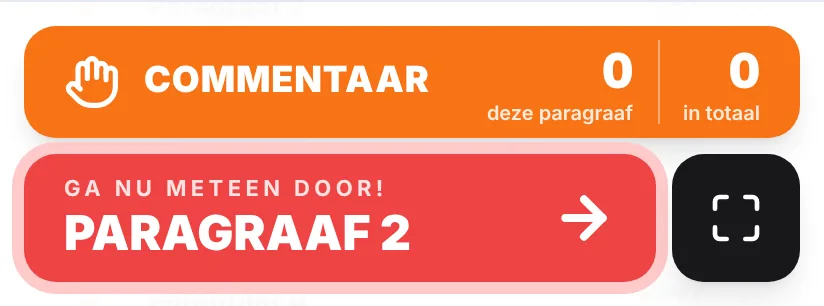
Knipperend: ga nu meteen door.
Rode knop: het deel is over tijd, maar de tijd is in de rest nog in te halen. Begin de commentaren af te ronden.
Rode, knipperende knop met ‘Ga nu meteen door!’: de tijd is niet meer in te halen (er zou minder dan 30 seconden overblijven voor elke resterende vraag, of je zit in de laatste 5 minuten). Ga zo snel mogelijk door.
In de presentatiemodus wordt de knop wit met rode letters, zodat hij op elke achtergrondkleur goed te zien is.
Wil je dit niet, zet het dan uit via Instellingen → Meldingen → ‘Rode knop ‘Volgende’’.
9De presentatiemodus
Dit is de aanbevolen manier om de studie te leiden. Je ziet alleen het belangrijkste, met grote letters en grote knoppen, en aan de kleur zie je in één oogopslag hoe je met de tijd zit.
Je opent hem met de knop ⛶ onderaan en sluit hem met de ✕ bovenaan (of met de knop ‘terug’ van je telefoon, zonder de app te verlaten).
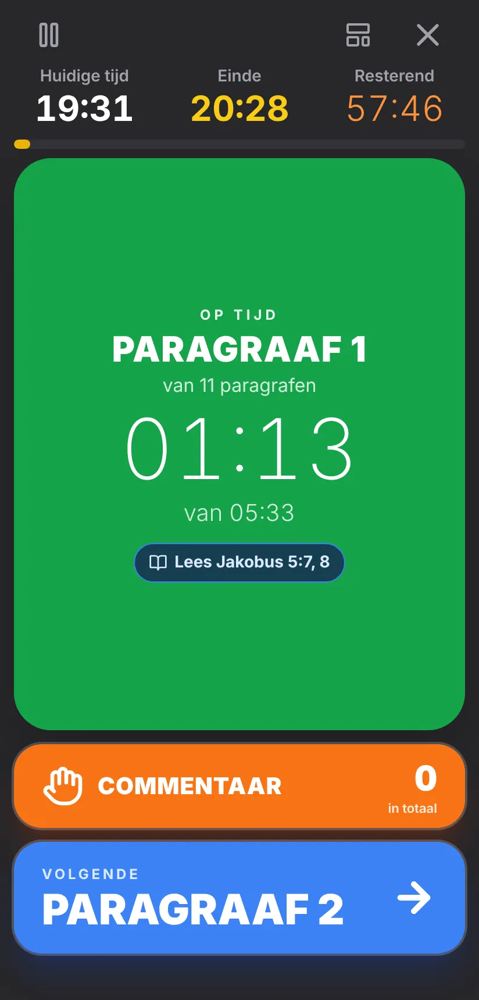
De presentatiemodus tijdens een paragraaf.
Gekleurd kader: waar je bent (bijvoorbeeld Paragraaf 1), de klok van dat deel en de geplande tijd. Groen, geel of rood afhankelijk van de tijd.
Commentaar: tik erop elke keer dat iemand commentaar geeft. Links zie je de commentaren bij deze paragraaf (of deze vraag) en rechts het totaal.
Volgende: gaat naar het volgende deel. De knop laat zien wat er komt.
Bovenaan zie je hoe laat de studie begonnen is, de huidige tijd, hoe laat ze eindigt en hoeveel tijd er nog over is.
Er zijn drie weergaven. Wissel met de knop ▦ bovenaan of via Instellingen → Scherm:
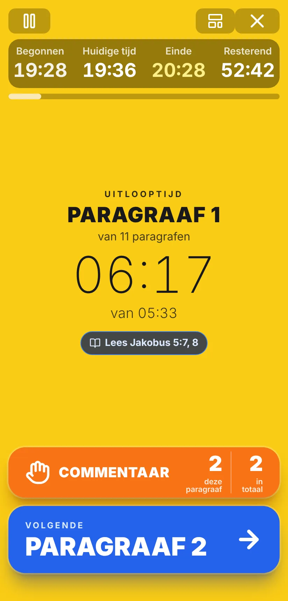
Verkeerslicht: het hele scherm verandert van kleur.
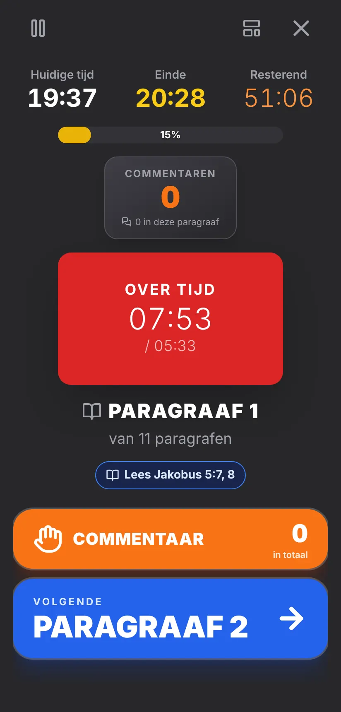
Klassiek: met de teller voor commentaren.
Aan het eind staat op de grote knop ‘Studie afronden’ en daarna ‘Rapport bekijken’.
10Hoe de tijden worden berekend
Lezen van elke paragraaf = het aantal woorden ÷ de leessnelheid (150, 180 of 210 woorden per minuut). Elke tekst, afbeelding, voetnoot of elk kernpunt telt daarnaast de tijd per antwoord (minstens 30 seconden; standaard 35) mee als commentaar, omdat de toehoorders hem lezen of bespreken.
De inleiding en het slot hebben de tijd uit de Instellingen (standaard elk 1 minuut). Het slot past zich aan de eindtijd aan: is er na de herhaling tijd over, dan krijgt het die helemaal; is er minder, dan wordt het korter.
Commentaren: de rest van de tijd wordt over alle vragen verdeeld. Lange of samengevoegde paragrafen krijgen iets meer (de groene ‘extra’ uit onderdeel 6).
Tijdens de studie: elke keer dat je op Volgende tikt, wordt de rest opnieuw berekend om op tijd klaar te zijn.
Voorbeeld: bij een studie van 60 minuten met 11 paragrafen en 21 vragen gaat ongeveer 7 minuten naar het lezen, 2 naar de inleiding en het slot, en ongeveer 51 naar de commentaren: iets meer dan 2 minuten per vraag.
11Instellingen
Tik rechtsboven op ⚙. De instellingen worden op je apparaat bewaard en zijn verdeeld over vier tabbladen:
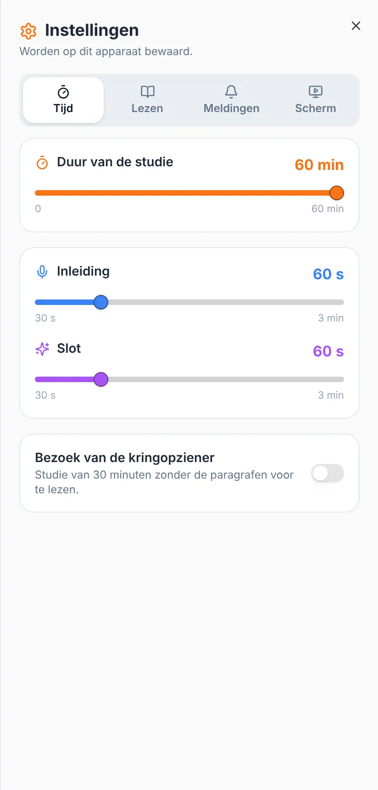
Tijd
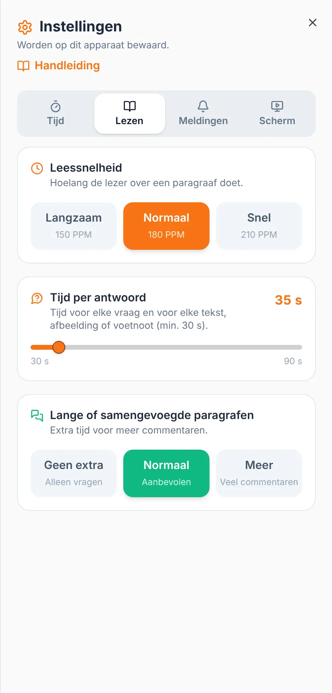
Lezen
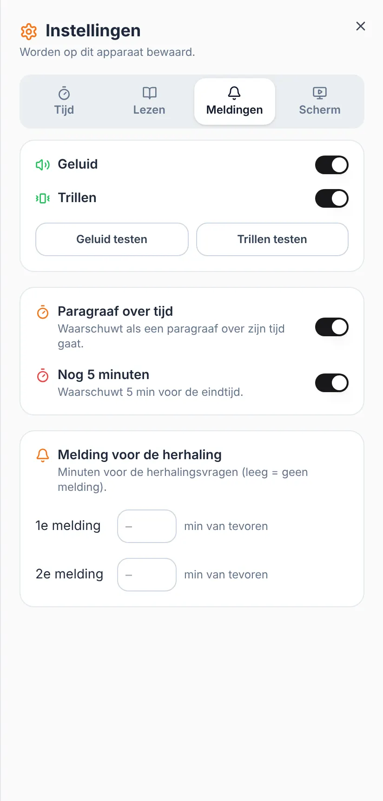
Meldingen
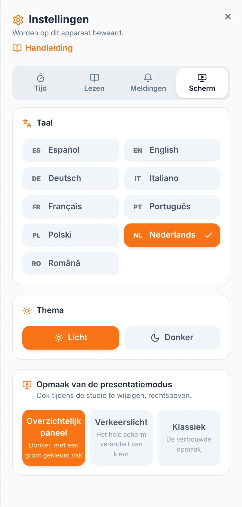
Scherm
Tabblad
Wat je kunt wijzigen
Tijd
Duur van de studie (tot 60 min). Duur van de inleiding en het slot (30 s tot 3 min). Bezoek van de kringopziener.
Lezen
Leessnelheid van de lezer: Langzaam (150), Normaal (180) of Snel (210 woorden/min). Tijd per antwoord (30 tot 90 s; geldt ook voor elke tekst, afbeelding, voetnoot of elk kernpunt). Lange of samengevoegde paragrafen: Geen extra, Normaal of Meer commentaren.
Meldingen
Geluid en trillen (met knoppen om ze te testen). Melding paragraaf over tijd, melding ‘Nog 5 minuten’ en maximaal twee meldingen voor de herhaling.
Scherm
Taal, licht of donker thema (met zes donkere varianten: grafiet, AMOLED-zwart, nachtblauw, warm, bosgroen en aubergine) en de weergave van de presentatiemodus.
Als je de leessnelheid of de tijd per antwoord wijzigt terwijl de studie loopt, geldt dat voor de volgende studie.
12Geluids- en trilmeldingen
Paragraaf over tijd: klinkt als de huidige paragraaf over zijn tijd heen gaat.
Nog 5 minuten: 5 minuten voor de eindtijd, met geluid, trillen en een bericht op het scherm.
Voor de herhaling: vul in hoeveel minuten voor de herhalingsvragen je een melding wilt (bijvoorbeeld 10 en 5). Laat leeg als je er geen wilt.
Weinig tijd voor de herhaling: als er minder dan 20 seconden per herhalingsvraag over is, waarschuwt de app je.
Rode knop ‘Volgende’: de knop om verder te gaan wordt rood als een deel over tijd gaat en knippert als de tijd niet meer in te halen is (onderdeel 8).
Zorg dat de telefoon niet op stil staat als je de meldingen wilt horen. Trillen werkt op Android; op de iPhone hangt het van de browser af.
13Bezoek van de kringopziener
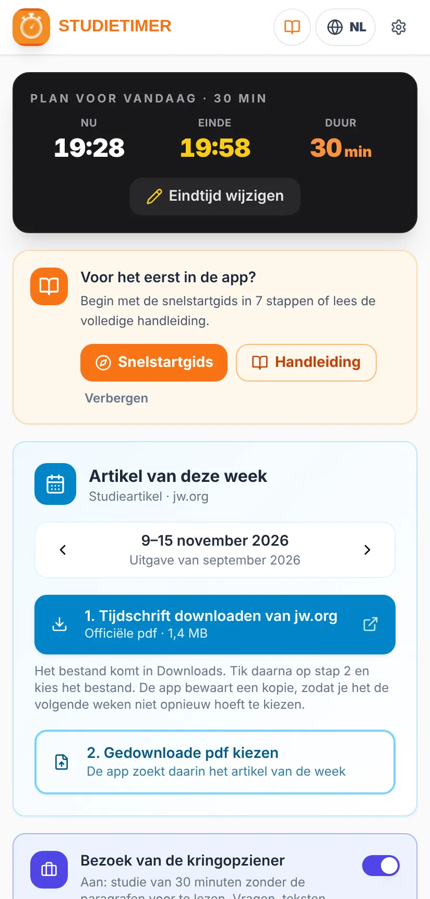
Schakelaar aan: studie van 30 minuten.
Zet in de week van het bezoek de schakelaar ‘Bezoek van de kringopziener’ aan op het startscherm (of via Instellingen → Tijd). De studie duurt dan 30 minuten en de paragrafen worden niet voorgelezen: de vragen, teksten, afbeeldingen en herhaling blijven. Vergeet niet hem na het bezoek weer uit te zetten.
Die week worden de paragrafen niet gelezen. Bij de geplande tijd van elke paragraaf staan teksten om te lezen, afbeeldingen en voetnoten bij de commentaren, bijvoorbeeld ‘Tekst om te lezen’ of ‘Afbeelding om te bespreken’ (in het meervoud als het er meer zijn).
14Talen
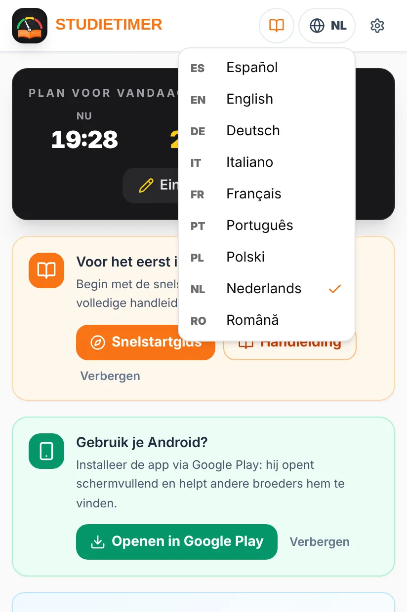
Taalmenu.
De app werkt in het Spaans, Catalaans, Baskisch, Galicisch, Engels, Duits, Italiaans, Frans, Portugees, Pools, Nederlands en Roemeens. Verander de taal met de wereldbolknop bovenaan of via Instellingen → Scherm. Als je de taal verandert:
verschijnt de hele app in die taal, met de bijbehorende datums en tijden;
downloadt de jw.org-knop De Wachttoren in diezelfde taal. De taal van de app bepaalt de taal van het tijdschrift;
vraagt de app in het Portugees één keer of je de uitgave voor Portugal of voor Brazilië wilt. Dat kun je later wijzigen via Instellingen → Scherm.
Deze handleiding is in al die talen beschikbaar: gebruik de taalknoppen bovenaan de pagina.
15Aan het eind: het rapport en de geschiedenis
Als je op ‘Studie afronden’ tikt, bewaart de app een rapport met de tijden van elk deel. Zo zie je wat te lang duurde en kun je het de volgende keer beter doen.
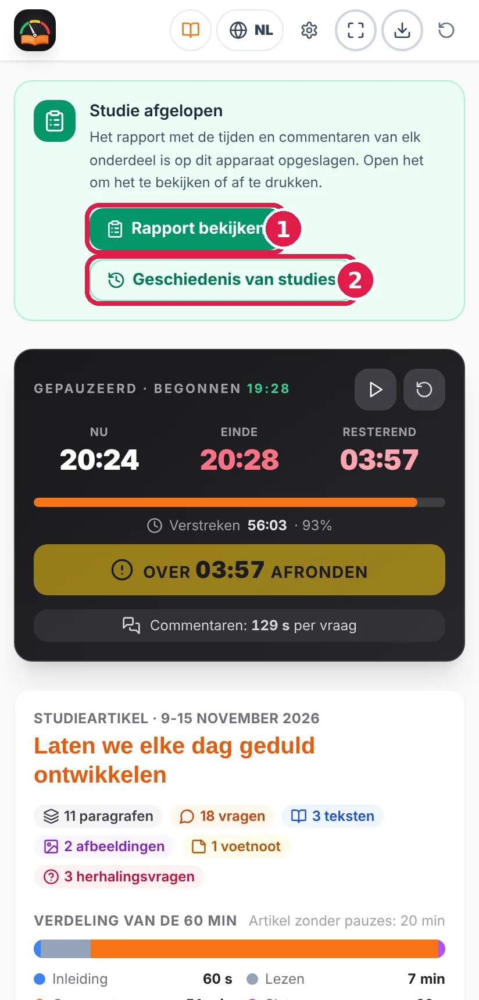
Bovenaan verschijnt de kaart ‘Studie afgelopen’.
Rapport bekijken: opent het rapport van deze studie in een apart tabblad.
Geschiedenis van studies: opent de lijst met alle bewaarde studies.
Het rapport
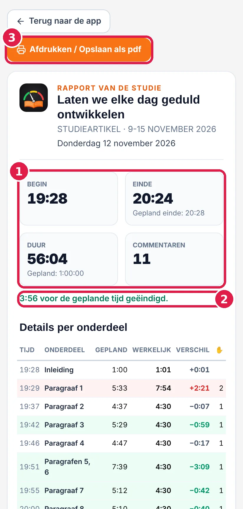
Bovenkant van het rapport.
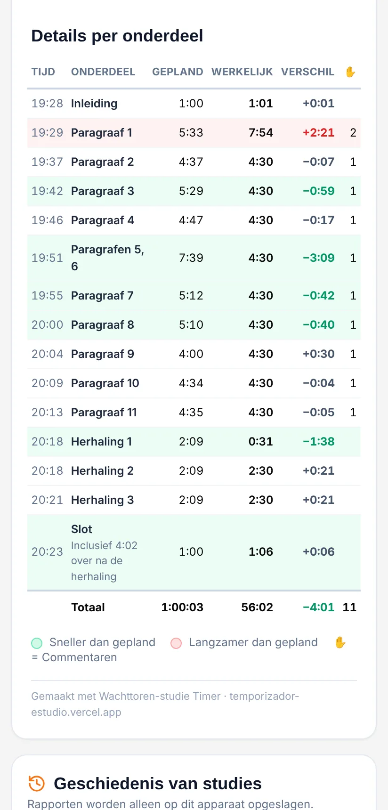
De tabel met elk deel.
Begin, einde en duur van de studie, met de geplande eindtijd en het totaal aantal commentaren.
Samenvatting in één zin, bijvoorbeeld ‘3:57 eerder klaar dan gepland’ (groen) of ‘later’ (rood).
Afdrukken / Opslaan als pdf: om op papier af te drukken of als bestand te bewaren.
De tabel heeft een regel voor elk deel: inleiding, elke paragraaf, elke herhalingsvraag en het slot. Op elke regel zie je:
het tijdstip waarop dat deel begon;
Gepland en Werkelijk: de tijd uit de planning en de tijd die echt gebruikt is;
Verschil:groen als het sneller ging en rood als het langer duurde;
✋: de gemarkeerde commentaren.
Op de computer en bij het afdrukken zie je ook de woorden en vragen van elke paragraaf. Het afgedrukte rapport past op één pagina.
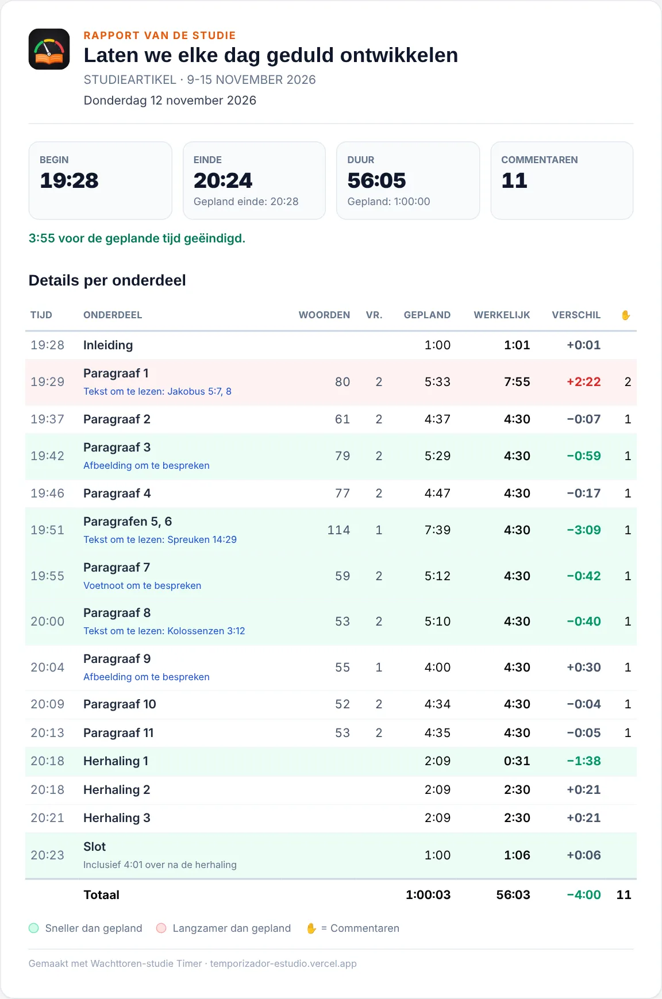
Het volledige rapport, zoals het op de computer of op papier staat.
De geschiedenis van studies
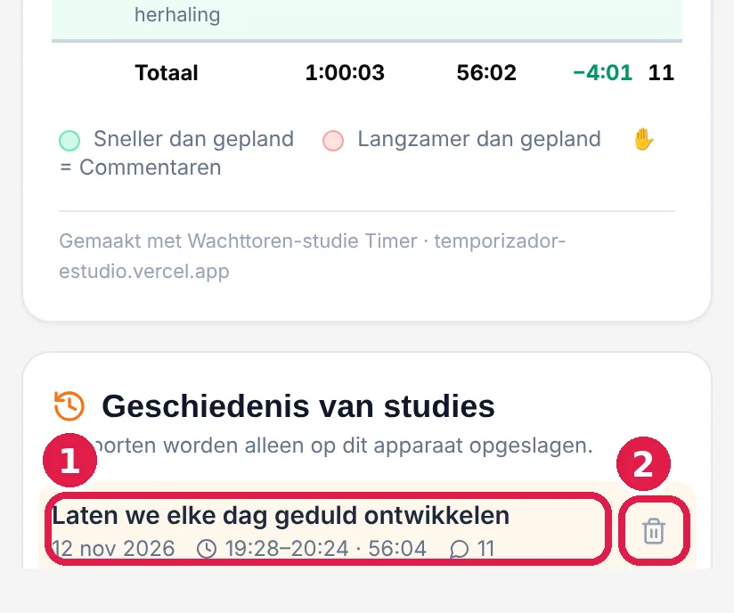
Lijst met bewaarde studies, onder het rapport.
Tik op een studie om het rapport te zien. Je ziet de datum, de tijden, de duur en de commentaren.
Prullenbak: om een rapport te verwijderen. Tik één keer en bevestig met ‘Verwijderen?’.
Rapporten worden alleen op dit toestel bewaard, nooit op internet. Er worden tot 100 studies bewaard. Als je de gegevens van de browser of de app wist, ben je de geschiedenis kwijt.
Je kunt de geschiedenis ook openen met de link ‘Geschiedenis van studies’ onderaan het startscherm.
Andere opties
Onder de planning staan ook de tijdstatistieken van elke paragraaf.
Met de knop exporteren⬇ bovenaan kun je de planning als afbeelding of pdf bewaren.
Om een andere studie voor te bereiden, tik je op opnieuw↻.
16Veelgestelde vragen
Kan ik leiden door de paragrafen en vragen in de app te lezen?
Nee. De app toont ze alleen om de tijden te berekenen. Gebruik om te leiden altijd JW Library of de gedrukte Wachttoren.
Waarom is De Wachttoren in een andere taal gedownload?
Het tijdschrift wordt gedownload in de taal van de app. Verander de taal met de wereldbolknop en tik opnieuw op ‘Tijdschrift downloaden van jw.org’.
Er staat dat de opmaak van het artikel niet herkend wordt.
Gebruik de officiële pdf van De Wachttoren, studie-uitgave, gedownload van jw.org (de knop ‘Tijdschrift downloaden van jw.org’ doet dat voor je). Gescande pdf’s of pdf’s gemaakt van schermafbeeldingen kunnen niet gelezen worden.
Het artikel van de week wordt niet in het tijdschrift gevonden.
Controleer of de gekozen week bij dat nummer van het tijdschrift hoort. Zo niet, dan toont de app het dichtstbijzijnde artikel en kun je een andere week kiezen.
Heb ik tijdens de studie internet nodig?
Alleen om het tijdschrift te downloaden. Als het artikel geladen is, werkt de timer zonder verbinding.
Ik was te laat of de studie begon later. Wat nu?
Open de paragraaf waar jullie zijn en tik op ‘Hier beginnen’. De app verdeelt de resterende tijd.
De openbare lezing is uitgelopen.
Tik vóór het begin op ‘Eindtijd wijzigen’ en vul de tijd in waarop de studie moet eindigen zodat de vergadering op tijd klaar is. De app kort alles in om op die tijd te eindigen. Deze optie maakt de studie alleen korter: nooit langer.
De meldingen klinken niet.
Controleer via Instellingen → Meldingen of ze aan staan, tik op ‘Geluid testen’ en zorg dat de telefoon niet op stil staat.
Welke gegevens bewaart de app?
Alleen je instellingen en de tijdschriften die je wilt bewaren, en altijd op je eigen apparaat. Er zijn geen accounts en er worden geen gegevens naar een server gestuurd. Meer informatie in het privacybeleid.
Waar zie ik de studies van andere weken?
In de geschiedenis van studies: tik op ‘Geschiedenis van studies’ als een studie klaar is, of gebruik de link onderaan het startscherm.
Kan ik een rapport verwijderen?
Ja. Tik in de geschiedenis op de prullenbak naast de studie en bevestig met ‘Verwijderen?’.
Waarom duurde het slot langer dan gepland?
Is er na de herhaling tijd over, dan gebruikt het slot die tijd om precies op tijd te eindigen. Het rapport laat dat zien onder ‘Slot’.